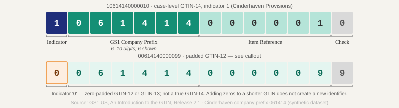

Part 1
Identification
GTIN Formats — Four Lengths, One Standard

| Format | Digits | Barcode type | Primary use |
|---|---|---|---|
| GTIN-8 | 8 | EAN-8 | Small items, outside North America |
| GTIN-12 | 12 | UPC-A | Consumer units in North America — the everyday "UPC" |
| GTIN-13 | 13 | EAN-13 | Consumer units outside North America — the everyday "EAN" |
| GTIN-14 | 14 | ITF-14 / GS1-128 | Cases, inner packs, groupings — never scanned at consumer POS |
Terminology cleanup: "UPC" and "barcode" are colloquial terms for GTIN-12 in North America. "EAN" means GTIN-13. "GTIN" is the umbrella standard that covers all four formats. The GS1 system uses GTIN everywhere; your retailer forms may say "UPC" but mean GTIN-12.
GTIN-14 Anatomy — Indicator Digit
A GTIN-14 is built from a GTIN-12 or GTIN-13 with one digit prepended — the indicator digit — and a recalculated check digit.
| Indicator digit | Meaning |
|---|---|
| 1 – 8 | Different packaging levels (inner pack, case, display shipper, pallet, etc.). GS1 assigns no fixed meaning per digit — each brand assigns these to its own hierarchy levels. One company's "1" may be an inner pack; another's may be a full case. |
| 9 | Variable-measure item — weight or quantity varies at point of sale (bulk, catch-weight) |
| 0 | Not a valid true indicator digit. A 14-digit string starting with 0 is a padded GTIN-12 or GTIN-13, not a GTIN-14. Adding filler zeros to a shorter GTIN does not create a new identifier. |
Source: GS1 US — An Introduction to the Global Trade Item Number (GTIN), Release 2.1
Check Digit Algorithm
Every GTIN ends in a single check digit calculated the same way, regardless of length.
Algorithm (works for GTIN-8, -12, -13, and -14):
Step 2: From the rightmost digit, assign alternating weights: ×3, ×1, ×3, ×1 … moving left.
Step 3: Multiply each digit by its weight. Sum all products.
Step 4: Check digit = nearest multiple of 10 at or above the sum, minus the sum.
Equivalently: (10 − (sum mod 10)) mod 10
Worked example (GTIN-13 without check digit: 629104150021):
| Position | 6 | 2 | 9 | 1 | 0 | 4 | 1 | 5 | 0 | 0 | 2 | 1 | Check |
|---|---|---|---|---|---|---|---|---|---|---|---|---|---|
| Weight | ×1 | ×3 | ×1 | ×3 | ×1 | ×3 | ×1 | ×3 | ×1 | ×3 | ×1 | ×3 | — |
| Product | 6 | 6 | 9 | 3 | 0 | 12 | 1 | 15 | 0 | 0 | 2 | 3 | = 57 |
Next multiple of 10 above 57 = 60 → check digit = 60 − 57 = 3
Full GTIN-13: 6291041500213
Source: GS1 US — Check Digit Calculator (official document)
Packaging Hierarchy — Which GTIN Goes Where
| Pack level | GTIN format | Where it appears |
|---|---|---|
| Each (consumer unit) | GTIN-12 or GTIN-13 | POS barcode on the retail package; every retailer item-setup form |
| Inner pack | GTIN-14 (indicator 1–8) | Wholesale/distributor ordering; some retailer forms require it |
| Case (master carton) | GTIN-14 (indicator 1–8) | Warehouse receiving, EDI 856 ASN, warehouse management systems |
| Pallet (SSCC) | SSCC — 18 digits, not a GTIN | Shipping labels (GS1-128), EDI 856; identifies a specific shipment, not a product |
SSCC vs GTIN-14
Both are 14-digit-ish numbers on shipping labels and both involve cases — this is the most common source of confusion.
A GTIN-14 identifies a product (what's in the box — 12-count case of SKU X). It's permanent and reusable across every shipment of that case configuration.
An SSCC (Serial Shipping Container Code) identifies a specific physical pallet or container in a specific shipment. It's 18 digits, generated per shipment, and appears on the GS1-128 pallet label. Two pallets of the same product have different SSCCs.
Part 3
Retailer Quick-Reference
Required hierarchy, portal name, and the one thing that trips up new vendors — per retailer.
| Retailer | Portal / system | Required hierarchy | Keyed unit | Notorious gotcha |
|---|---|---|---|---|
| Walmart | Supplier One (supplierone.walmart.com) Replaced Item 360, September 2024 |
Each → Inner/Warehouse Pack → Case → Pallet; unique GTIN per level | Consumer unit (each) | Once an item is created in Walmart's catalog, its trade item hierarchy is permanent — an incorrect configuration can't be edited, only rebuilt as a new item, and changing the sellable quantity in a case requires acquiring a brand-new GTIN. Once GDSN-synced, dimensions also lock; corrections must flow through the data pool. (Dimension & Weight Integrity →) |
| Costco | Vendor Hub (hub.costco.com) | Item UPC + Case GTIN | Consumer unit (member-facing pack) | Costco's item setup is buyer-driven and barely publicly documented — its notorious data landmines (ASN lot codes, quantity mismatches at ~$10/carton) surface at receiving, not at setup. [EDI-vendor documentation, not Costco primary] |
| Whole Foods Market | Vendor Internet Portal / VIP (vip.wholefoods.com) for cost file maintenance; new item setup via Amazon Grocery Central (grocerycentral.amazon.com) | Consumer unit; 13-digit barcode required for all packaged products | Consumer unit (each) | Whole Foods gates US item-setup documentation behind supplier login — verify requirements directly in the portal; no publicly verifiable gotcha is listed here by design. |
| UNFI | SVHarbor (svharbor.unfi.com) | Consumer unit published via GDSN to GLN 0041130079153 ("UNFI Corporate"); Item Proposal in SVHarbor required to activate | Consumer unit (each) | Publishing to GLN 0041130079153 does not process the item — a separate Item Proposal must be submitted in SVHarbor, or the product sits inactive with no rejection notice. |
| KeHE | KeHE CONNECT® (connectsupplier.kehe.com) | Each + Sellable Case Pack + Warehouse Receiving Pack — every level requires its own unique GTIN-14 (ITF-14) | Case (ordering unit) | KeHE requires a unique GTIN-14 at every packaging level — creating it is solely the supplier's responsibility. The consumer unit UPC (GTIN-12) cannot serve as the case GTIN; errors surface at warehouse receiving, not at setup time. |
| Kroger | Kroger Item API (KIA) Certified providers: Syndigo, Salsify, 1WorldSync · legacy VIP mid-phase-out |
Consumer unit GTIN via certified provider syndication (Syndigo / Salsify / 1WorldSync) | Consumer unit (each) | Kroger no longer has one front door — new items now syndicate through one of three certified providers (Syndigo, Salsify, 1WorldSync) via the Kroger Item API, the legacy VIP portal is mid-phase-out, and Our Brands / Harris Teeter items can only go through Syndigo. |
Retailer systems verified June 2026 — these get renamed; check before relying.
Sources: Walmart — Supplier One HelpDocs (supplierone.helpdocs.io, confirmed via search-result text, June 2026) · Costco — Vendor Hub (hub.costco.com) · Whole Foods Market — vip.wholefoods.com; grocerycentral.amazon.com (US portals confirmed; content login-gated) · UNFI — 1WorldSync UNFI GDSN FAQ (updated 2024-02-19) · KeHE — KeHE AOM & GTIN Requirements, corroborated via Presence Marketing (pmidpi.com), 2025 · Kroger — KIA FAQ (thekrogerco.com, April 3, 2025); thekrogerco.com/vendor-suppliers/vendors/retail-vendors/ (June 2026)
Part 4
Compliance Horizon
GS1 Sunrise 2027 — 2D Barcodes
Sunrise 2027 is an industry readiness milestone, not a government mandate. GS1 is a voluntary standards body with no enforcement authority. The goal: all retail POS systems capable of reading GS1-compliant 2D barcodes by end of 2027. UPC linear barcodes remain valid at retail after the 2027 date.
The commercial stakes are real: over 60 major retailers — including Walmart, Target, and Kroger — have publicly committed to POS readiness by the deadline. Non-readiness creates delist risk and reduced shelf placement, not a regulatory fine.
What counts as a compliant 2D barcode. Two approved formats: (1) a QR code with GS1 Digital Link URI syntax encoding your GTIN; (2) a GS1 DataMatrix with GS1 Application Identifiers. A marketing QR code pointing to a website URL without GS1 structure cannot be parsed at POS and does not satisfy the requirement.
Dual-marking requirement. Any product carrying a 2D barcode on-pack must also carry a traditional linear barcode until 90% of POS scanning solutions can read GS1-compliant 2D barcodes and capture the GTIN. As of mid-2026, that threshold has not been declared met.
FSMA 204 — Food Traceability Rule
Section 204 of FSMA requires additional lot-level recordkeeping for foods on the FDA's Food Traceability List (FTL). Covered foods include fresh produce, shell eggs, nut butters, finfish, crustaceans, and certain ready-to-eat deli items. The rule requires tracking Key Data Elements (KDEs) at each Critical Tracking Event (CTE) — harvesting, cooling, initial packing, shipping, receiving.
Enforcement date: July 20, 2028. The original compliance date of January 20, 2026 was extended 30 months by Congressional directive. FDA is directed not to enforce the rule prior to July 20, 2028.
Part 5
Logistics Numbers
NMFC Freight Class
LTL freight class runs from 50 (densest, cheapest to ship per hundredweight) to 500 (lightest or most difficult, most expensive). Four factors determine class: density, handling, stowability, and liability. For most packaged food, density is the determining factor.
Step 1 — Calculate density:
Density (PCF) = Weight (lbs) ÷ Volume (ft³)
Example: 30 lb case, 18″ × 14″ × 10″ → volume = 1.46 ft³ → density = 20.5 PCF → Class 70
Step 2 — Look up the class:
| Density (lbs/ft³) | NMFC Class |
|---|---|
| 50 or greater | 50 |
| 35 – <50 | 55 |
| 30 – <35 | 60 |
| 22.5 – <30 | 65 |
| 15 – <22.5 | 70 |
| 12 – <15 | 85 |
| 10 – <12 | 92.5 |
| 8 – <10 | 100 |
| 6 – <8 | 125 |
| 4 – <6 | 175 |
| 2 – <4 | 250 |
| 1 – <2 | 300 |
| Less than 1 | 400 |
Source: NMFTA Docket 2025-1, effective July 19, 2025 · nmfta.org
DIM Weight Divisors
Parcel carriers charge the greater of actual weight or dimensional weight (DIM weight) — the space a package occupies expressed as pounds. The formula:
Billable weight = MAX(actual weight, DIM weight)
| Carrier / Service | Divisor | Notes |
|---|---|---|
| UPS (account / daily rates) | 139 | Ground, 2nd Day Air, Next Day Air |
| UPS (retail / walk-in rates) | 166 | UPS Store or counter rates without a contract; high-volume shippers can negotiate 139 |
| FedEx (domestic) | 139 | Ground, Home Delivery, Express |
| USPS | 166 | Priority Mail and Priority Mail Express confirmed; threshold >1 ft³ (1,728 in³). USPS Ground Advantage rule varies — verify at usps.com before relying on this row. |
| LTL freight | N/A | LTL uses density → freight class, not a DIM divisor — see NMFC table above |
UPS and FedEx divisors: corroborated secondary (packcalc.com March 2026, packizon.com) — ups.com timed out; fedex.com returned 403 during verification. USPS threshold (>1 ft³) confirmed primary via pe.usps.com/text/dmm300/Notice123.htm. Divisors verified June 11, 2026 · carriers revise in annual rate updates (Dec–Jan cycle) — reverify after June 2027.
TiHi
Ti is the number of cases per layer on a pallet. Hi is the number of layers stacked high. Together they define the pallet configuration a retailer expects on inbound shipments.
Example: Ti 12, Hi 8 → 96 cases per pallet
Retailers specify TiHi on purchase orders. Warehouse systems validate the configuration at receiving, not just the case count — shipping Ti 14, Hi 5 when the order called for Ti 12, Hi 6 can trigger a chargeback even when the total case count is identical.
Case Cube
Case cube is the volume of a master carton in cubic feet, used for warehouse slotting, pallet-build planning, and TiHi calculation.
Example: 18″ × 14″ × 10″ → 2,520 ÷ 1,728 = 1.46 ft³
1,728 = 12 × 12 × 12 — one cubic foot in cubic inches